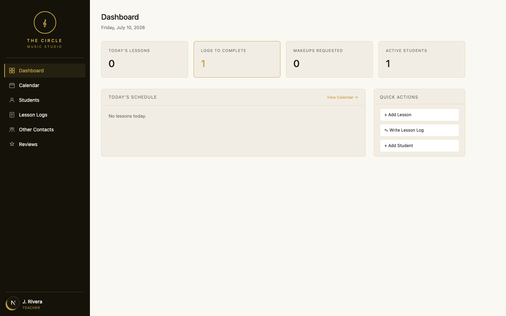
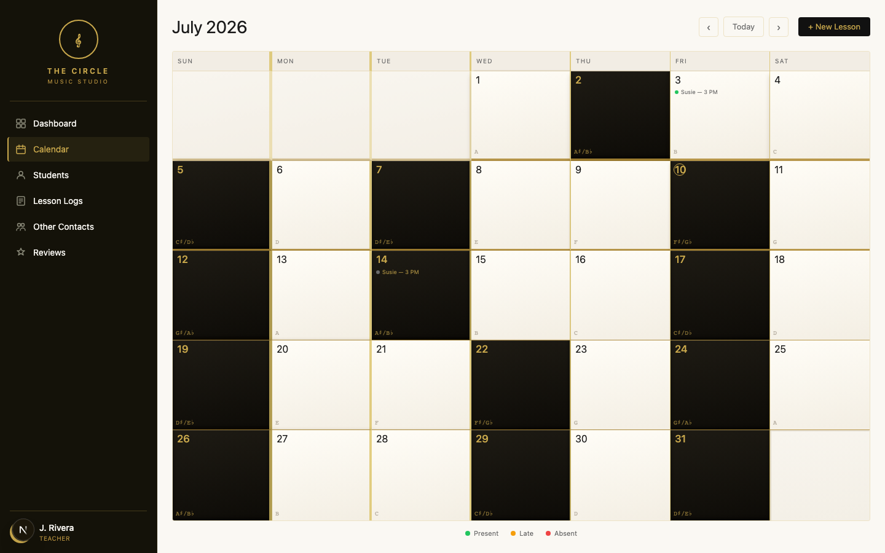
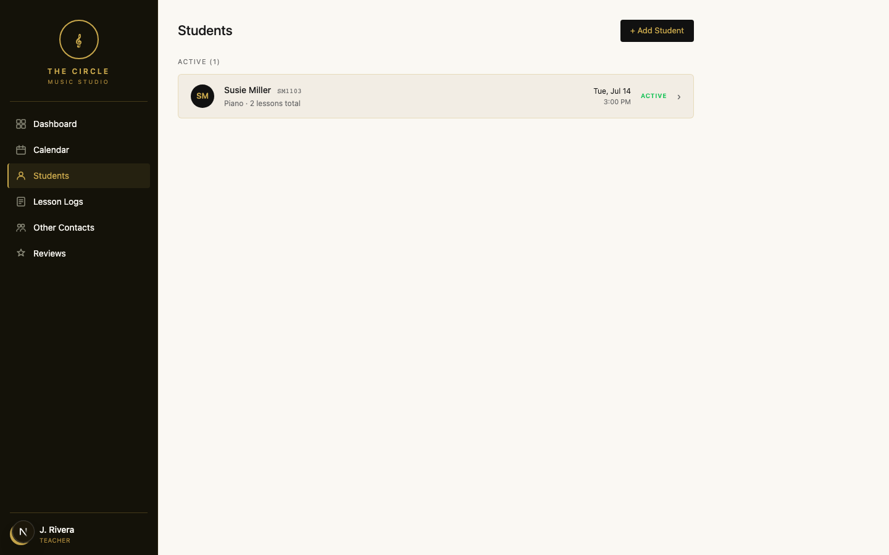
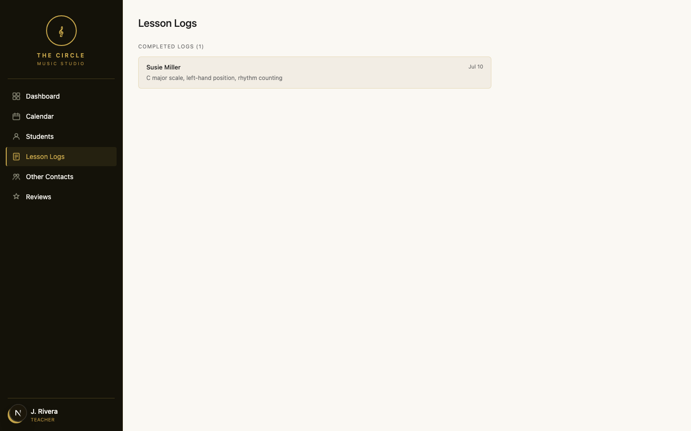
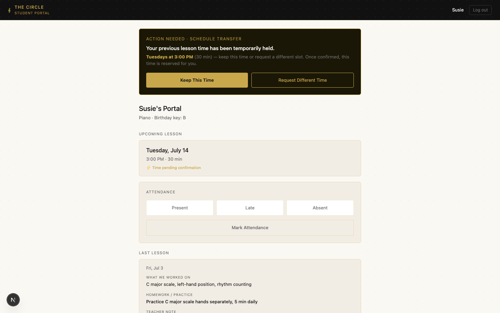
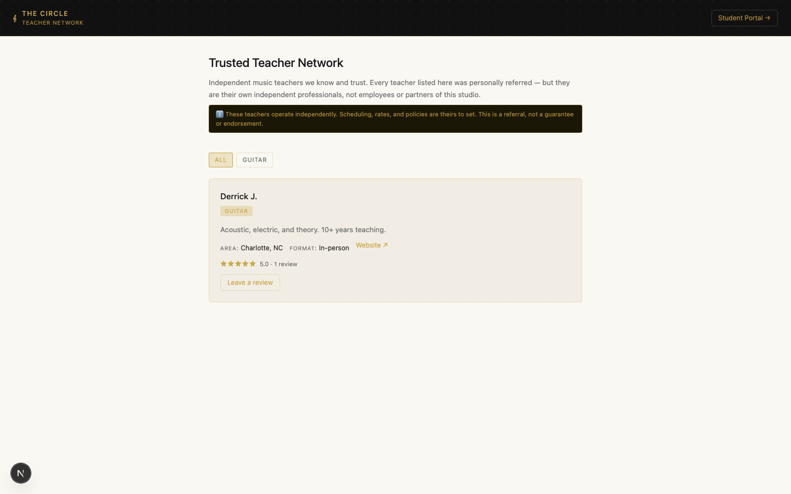
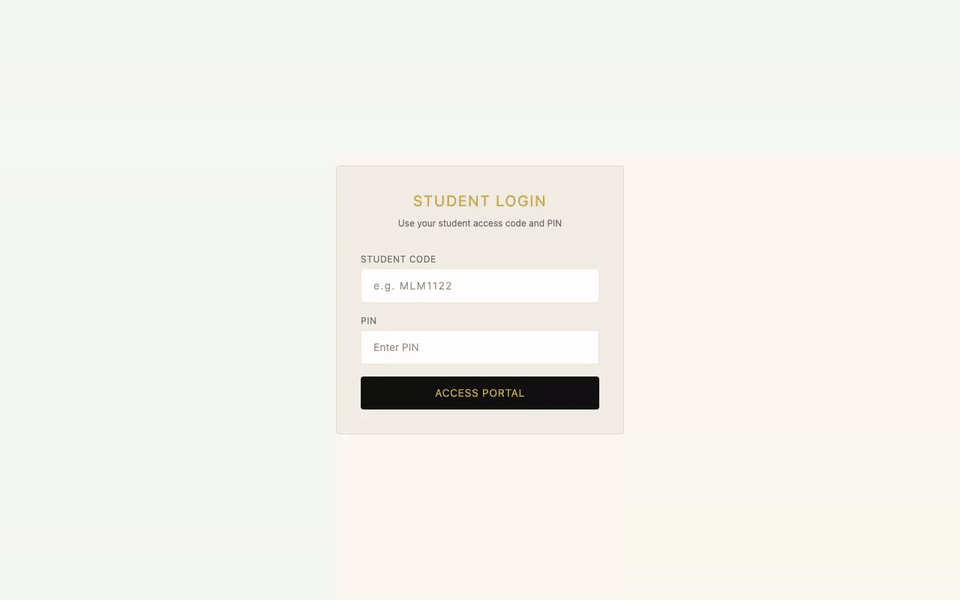

The Circle is a private music-lesson hub that gives a teacher one place to manage students, attendance, lesson notes, and schedule changes. Parents and students get their own protected view, so they can see what they need without seeing the teacher's private notes or another family's information.
Status: Private, protected deploymentAccess: Auth-gated, no public loginThis page: Sanitized walkthrough
All screenshots and the walkthrough below use synthetic, locally-seeded demo data captured in an isolated local environment — never the operational deployment or real records. The live application is not linked from this page and has no public login.
What Each Side Can Do
Teachers manage the full lesson workflow — students, calendar, attendance, and lesson logs. Parents and students see only their own schedule, attendance, homework, and approved lesson notes. Private teacher notes stay on the teacher side, while family access is scoped through each authenticated session.
Why There's No Public Login
Because this handles real minors' scheduling and attendance data once it has real users, there's no public-facing way to log in and try it — a different posture than a code-only demo. Public proof here means real screenshots, a recorded walkthrough, and this written explanation, all built on synthetic local data, while the live application itself stays private and access-protected.
What's Already Working
Teacher logs in, manages students, calendar, and lesson logs.
Each completed lesson gets a log: what was worked on, homework, and two separate note fields — one visible to the parent, one private to the teacher.
Parent/student logs in with a teacher-issued code and PIN, sees their own upcoming lesson, attendance, and the parent-visible portion of the last lesson log only.
Schedule changes go through a request-and-confirm flow — the parent requests or accepts a time, the teacher confirms it. Nothing is booked unilaterally.
A public, unauthenticated referral page lists independently-vetted teachers the studio trusts, each with an explicit disclaimer that they're independent professionals, not staff — reviews are submitted publicly but held for moderation before appearing.
Screenshots
Captured against a local, isolated instance seeded with synthetic data — never the production database.

Teacher dashboard

Calendar

Students list

Lesson logs

Parent portal — schedule request flow

Public contacts / referral page
Walkthrough

~11s scoped walkthrough · teacher flow → parent flow · synthetic local data
Technical Notes
Next.js application on Vercel, with PostgreSQL (via Neon) and Prisma as the ORM.
Separate teacher and parent authentication flows, each scoped to its own role.
The parent portal's database query does not select the teacher's private note field — it is excluded before the response is built, not just hidden in the interface.
The parent portal derives the student ID from the authenticated session rather than a URL parameter, so changing the address bar cannot select another family's record.
On the public referral page, contact visibility (email, phone, website) is enforced server-side in the database query, not just hidden with CSS.
Public review submissions remain pending until reviewed and approved — nothing publishes automatically.
What This Proves
Privacy-conscious product design carried all the way through the data layer, not just the UI — a real, working operations tool built with the same rigor applied to security review, deployment protection, and public-exposure boundaries.
Tradeoffs
Text-based scheduling, not a booking calendar. Schedule changes are a teacher-confirmed request/accept flow. A guided calendar where parents browse open slots and self-book is a deliberately separate, not-yet-built phase — the current flow never implies more automation than exists.
Single-teacher model. Built for one studio/teacher's real workflow first, not a multi-tenant platform. Multi-teacher support is a real extension, not a current claim.
Limitations
Referral network population currently has no self-service intake path — contacts are added directly, by design, until a moderated intake flow is built.
No calendar-based self-booking (see Tradeoffs).
Single points of privacy enforcement (query-level field exclusion, session scoping) are the actual guarantee; there's no separate defense-in-depth layer beyond the database query itself yet.
Outcome
A real, privately-deployed tool, validated through live protected smoke testing and ready for controlled private use. The application underwent a dedicated privacy, access-control, and security review before its current deployment checkpoint, verified clean of secrets and unrelated internal references across the tracked project files reviewed for this public-proof pass, and deliberately kept private rather than stretched into a public demo it was never designed to safely be.
Deterministic capture. No live targets. No production data. No public login surface exists for this application.